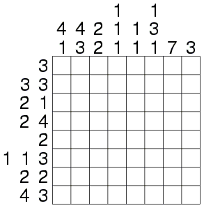
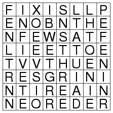
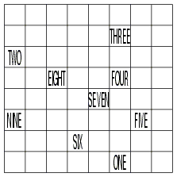
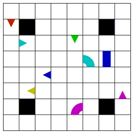

SAMPLER
One of the reasons your uncle was so successful was that he always
liked to dabble in so many different areas.
PAINT-BY-NUMBERS

WORD SEARCH

TRAIN
The train track is a closed loop that visits every square exactly
once, only moves horizontally or vertically from one square to the
next, visits every station in numerical order (with ONE following
NINE), and never makes a turn when passing through a station.

SNAKES
Six snakes, each long enough to occupy ten unshared squares, are
wriggling in the grid below. The snakes' bodies can turn any number
of times, but they only bend at right angles. In addition to all of
their tails, a few other body parts are shown to get you started.
